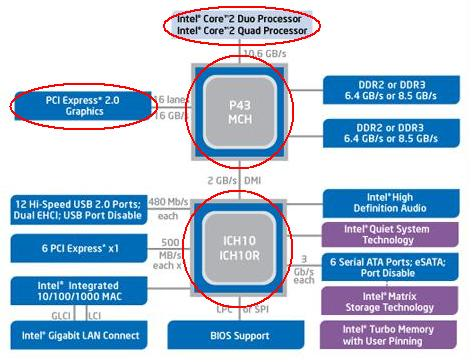
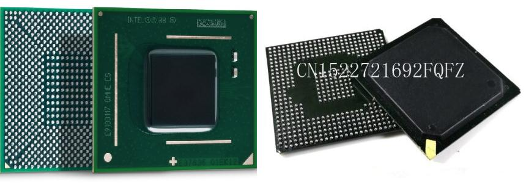
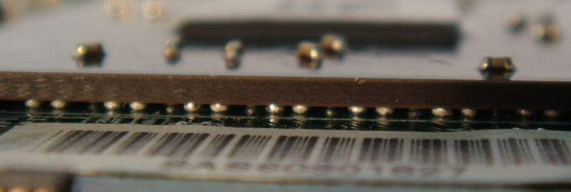
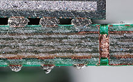
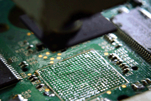
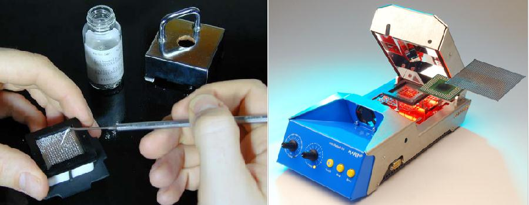
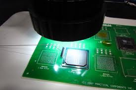

BGA монтаж, дефекты и методы устранения
Ниже представлена блок схема одной из архитектур современного компьютера/ноутбука.

Как можно увидеть из схемы, весь компьютер состоит из нескольких основных центральных блоков (обведены красным): южный мост (ICH10),северный мост (P43), центральный процессор Intel и блок обработки графики (видеокарта). В «железе» эти блоки представляют собой большие, очень сложные интегральные микросхемы (ИС), с огромным количеством выводов.

Как видно на рисунке, выводы таких ИС - шарики припоя, нанесенные на корпус микросхемы, BGA (англ. Ball grid array — массив шариков) — тип корпуса поверхностно-монтируемых интегральных микросхем .
Установка такой микросхемы проходит в несколько этапов, микросхему располагают на печатной плате, согласно маркировке ответных контактных площадок на плате, далее зону установки микросхемы нагревают до температуры плавления припоя, силы поверхностного натяжения расплавленного припоя заставляют микросхему зафиксироваться четко над тем местом, где она должна находиться на плате.
Установленная ИС на плату:

Так выглядит ИС на плате в разрезе, видны шары припоя, на которых впаяна ИС и слои меди в плате:

Основное преимущество BGA монтажа – высокая плотность размещения контактов на ИС небольших размеров, вместе с этим это является и самым слабым местом - высокая чувствительность к механическим нагрузкам, будь то вибрационные, ударные, либо же, нагрузки, возникающие в процессе теплового расширения корпуса ИС и платы на которую она впаяна. Вследствии таких воздействий, контакт между шариками припоя и платой нарушается, и устройство перестает работать, проще говоря, шарики отрываются от контактных площадок. Стоит заметить, что некачественный монтаж микросхемы на заводе производителя или в ремонтной мастерской так же может стать причиной нарушения контактов и выхода из строя устройства. В интернете встречаются несколько названий такого дефекта: отвал, недопай, микротрещины в пайке (холодная пайка) и пр.

C помощью оптических приборов, можно собственными глазами увидеть, как выглядят такие дефекты: недопай, холодные трещины.
Устранение такого дефекта пайки возможно при наличии соответствующего оборудования. Проходит в 3 этапа:
1) Демонтаж ИС на специальной инфракрасной или термовоздушной паяльной станции.

2) Нанесение новых шаров припоя, с помощью трафарета и оснастки, с последующим оплавлении в ИК печи.

3) Завершающий этап – установка ИС на плату.

Весь процесс называется реболл, реболлинг, после такой процедуры, как правило, причина неисправности устраняется и устройство вновь готово к эксплуатации.
Однако, не всегда реболл по настоящему устраняет дефект, даже если устройство заработало вновь, эффект этот кратковременен. Происходит такое по причине того что дефект кроется не в монтаже, а внутри самого чипа, в таком случае, микросхему нужно только менять. Более подробно об этом можно прочитать в следующей статье.